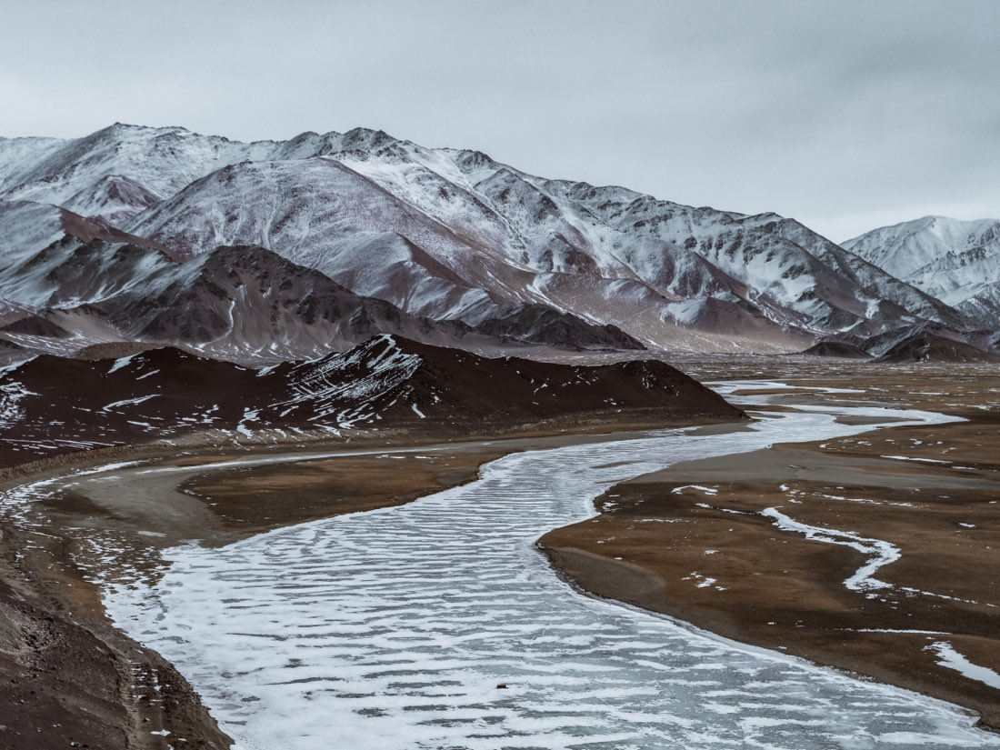
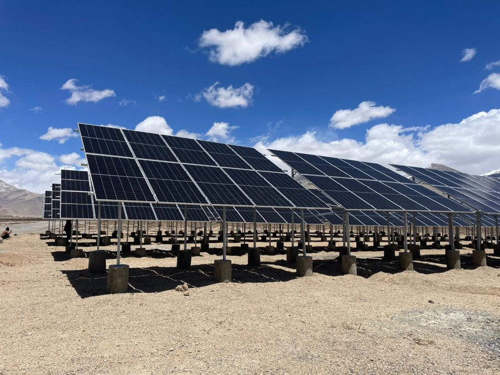
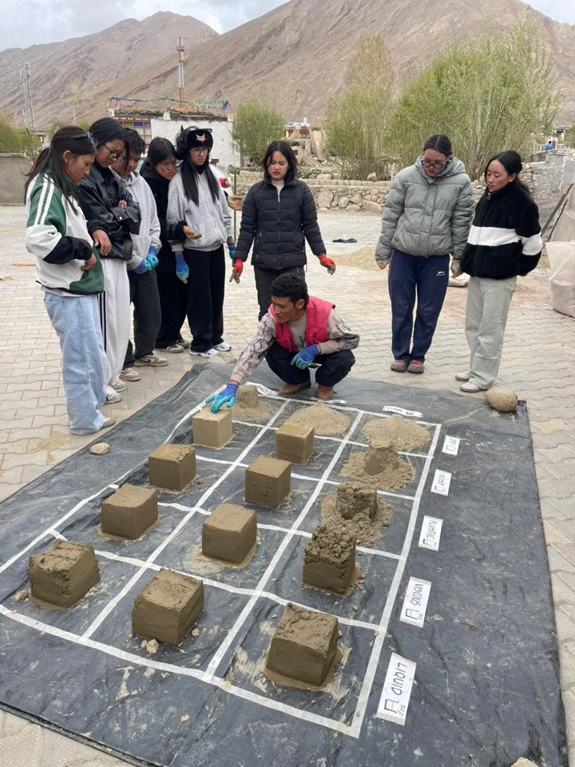
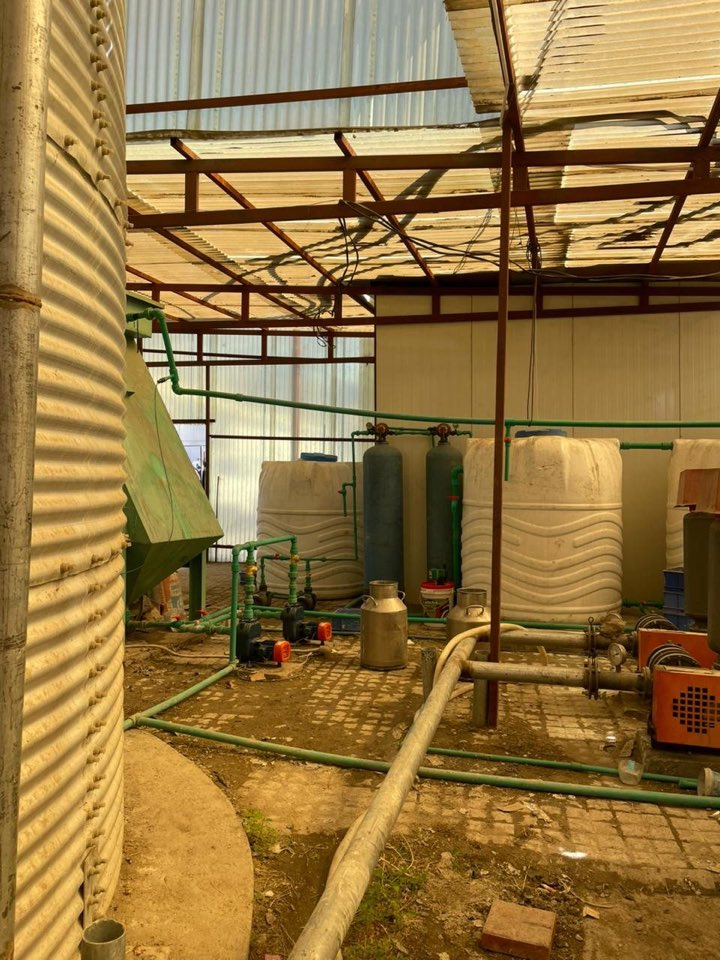
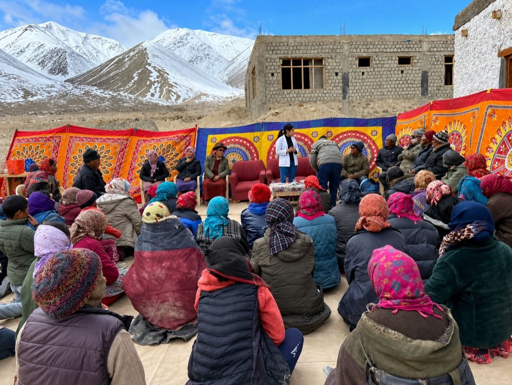

Our work
Focus areas for resilient mountain systems.
Seven connected focus areas, each addressing a different pressure on high-altitude life — and each designed to reinforce the others.
01 — Sustainability & Climate Resilience
Planning mountain communities for net-zero, circular and adaptive futures.
SEEHWA combines sustainability and climate resilience because fragile high-altitude regions need mitigation and adaptation at the same time. The work centres on net-zero emissions, resource circularity, low-impact design and community resilience planning.
- Climate-sensitive settlement and infrastructure planning.
- Net-zero and circular economy models for remote mountain communities.
- Community resilience planning for water stress, harsh winters and shifting livelihoods.
- Applied research and advisory inputs for climate-responsive development.

02 — Energy & HVAC
Clean energy and low-energy comfort systems for extreme cold.
High-altitude reliability depends on both clean power and efficient thermal comfort. The work covers renewable systems, passive solar buildings, decentralized microgrids and low-energy heating and ventilation suited to cold, remote regions.
- Solar and renewable energy planning for off-grid and semi-grid settlements.
- Passive solar design, building energy efficiency and cold-climate retrofits.
- Decentralized microgrid concepts for community infrastructure.
- Low-energy heating and ventilation for homes, institutions and community spaces.
- Technical advisory linking health, comfort, energy demand and livability.

03 — Ecology
Regenerating fragile ecosystems through nature-based solutions.
Ecological stability in mountain regions directly affects water, agriculture, settlement safety, health and livelihoods. Our ecology work focuses on regeneration, biodiversity conservation and nature-based solutions.
- Ecological restoration and regeneration planning.
- Biodiversity-sensitive project design and conservation support.
- Watershed, soil and land-use sensitivity inputs.
- Nature-based solutions for climate and development challenges.

04 — Water & Waste Management
Circular systems for water, sanitation and waste.
We work on circular water systems, greywater reuse, sanitation and zero-waste solutions — systems that reduce pressure on fragile ecosystems while improving basic services and local quality of life.
- Greywater reuse, sanitation and decentralized treatment systems.
- Solid waste reduction, segregation and zero-waste planning.
- Water security approaches suited to cold, dry mountain settlements.
- Technical support for institutions, community facilities and rural infrastructure.

05 — Agri-Ecology
Climate-smart agriculture rooted in regenerative practice.
Agri-ecology is the bridge between food security, soil health, traditional knowledge, livelihood resilience and ecological regeneration. We support climate-smart agriculture, organic farming, composting and regenerative practice.
- Organic and low-input farming practices for cold-arid conditions.
- Composting and circular organic resource reuse.
- Support for regenerative agriculture and soil health.
- Integration of local agricultural knowledge with climate-smart methods.

06 — Health
Strengthening preventive care and last-mile health access.
Health work in remote high-altitude settlements is connected to water, sanitation, housing, mobility, climate stress and local institutional capacity. We work on community-based access, preventive care and last-mile infrastructure.
- Community health access and preventive care initiatives.
- Health camps, awareness and local screening support.
- Data-informed understanding of last-mile health needs.
- Healthcare infrastructure support for remote settlements.

07 — Livelihood & Rural Development
Building infrastructure, education access and income pathways together.
We approach livelihood and rural development as one integrated system: strengthening physical infrastructure, expanding access to education, and promoting income generation for sustainable livelihoods and holistic wellbeing.
- Integrated village and rural development planning.
- Infrastructure support connected to wellbeing, mobility and access.
- Education access and local capacity-building pathways.
- Income generation linked to ecological, cultural and local strengths.

Get in touch
Work with us on implementation, research or field partnerships.
We welcome technical collaborators, CSR partners, institutions, volunteers and interns who can contribute to practical work in Ladakh and other high-altitude regions.